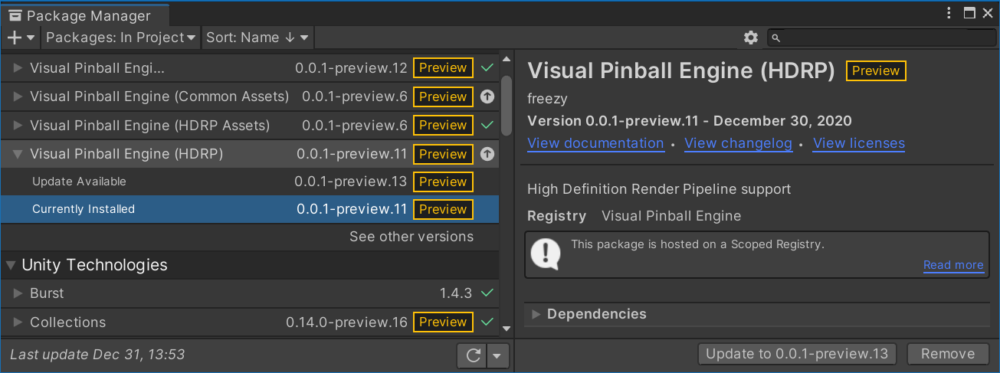
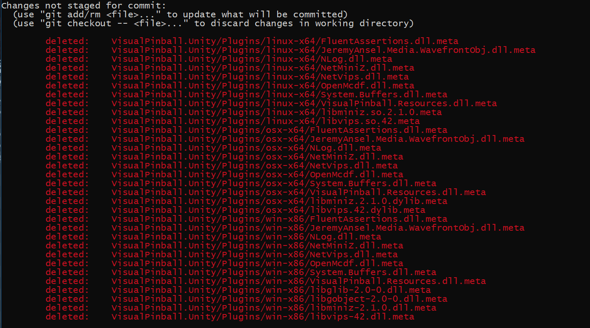

Development Setup
VPE uses Unity's Package Manager to fetch its code. For users, that's great because they get updates without having to deal with git, and the actual project to work with is very small because the heavy dependencies get pulled in by UPM. We use our own scoped registry. Packages get published automatically when something gets merged or pushed to master.
However, packages are immutable in Unity, meaning code can't be updated and thus they are not suitable for local development. For that, you need to clone each package locally and manually add them to the project.
Order of Setup
If you already have a project that references VPE through our registry, remove it. Then, clone all the repos:
git clone git@github.com:VisualPinball/VisualPinball.Unity.Assets.git
git clone git@github.com:freezy/VisualPinball.Engine.git
git clone git@github.com:VisualPinball/VisualPinball.Unity.Hdrp.git
git clone git@github.com:VisualPinball/VisualPinball.Unity.Urp.git
git clone git@github.com:VisualPinball/VisualPinball.Engine.PinMAME.git
If you receive authentication errors, you will need to add an SSH key to your GitHub account.
Lastly, you'll need to compile some non-Unity dependencies:
cd VisualPinball.Engine
dotnet build -c Release
cd ..
cd VisualPinball.Engine.PinMAME
dotnet build -c Release
HDRP
In your Unity project, add the repositories as packages from disk in the following order:
- VisualPinball.Unity.Assets
- VisualPinball.Engine
- VisualPinball.Unity.Hdrp
- VisualPinball.Engine.PinMAME
URP
When working with URP, use these repositories in this order:
Releasing
One advantage of UPM is that it makes it easy for users to upgrade:

In order for that to work, we use GitHub Actions to increase the package version on each merge to master, publish the package to our registry, and update the dependents. For example, if you commit to vpe.assets, GitHub will:
- Increase the version of
vpe.assetsand publish a new package to our package registry - Update
vpe.assets.hdrp,vpe.assets.urpandmainto use the new version - Since they got updated, the three repos in the last step will also increase their version and publish themselves
Summary: Committing to master on any repo will automatically release itself and its dependents. So avoid committing to master directly and use PRs!
Cross-Repo Features
Sometimes you'll be working on features that span multiple repositories. We recommend branching each repository to the same branch name so it's clear which branches belong together when testing the feature.
.meta Files
Unity automatically creates a .meta file for every file and directory it indexes. It also does a somewhat decent job cleaning them up if the original file is missing. The .meta files are particularly important for native binaries, because they tell Unity to which platform they belong and thus avoid conflicts.
The thing is, in the main repo there are a few native dependencies that we don't include directly. Instead, we reference them through NuGet and copy them to Unity's Plugin folder when compiling for the first time. That means that in the repo, we have the .meta files for those dependencies, but not the actual files, which results in Unity cleaning the .meta files for all platforms when compiling.
VisualPinball.NativeInput follows the same model: build/package it in its own repository, publish to NuGet, then let VisualPinball.Engine restore and copy the runtime binary into VisualPinball.Unity/Plugins/<rid>.
Long story short, you'll end up with something like this very soon:

You don't want to commit this because it will break CI and package publishing. We also can't put them into .gitignore because that only applies to files that exist and you don't want to commit (here it's the other way around - you deleted files you don't want to commit).
The workaround is to tell git to explicitly ignore those files. You only do that once after cloning:
Show all assume-unchanged commands
git update-index --assume-unchanged VisualPinball.Unity/Plugins/android-arm64-v8a/FluentAssertions.dll.meta
git update-index --assume-unchanged VisualPinball.Unity/Plugins/android-arm64-v8a/ICSharpCode.SharpZipLib.dll.meta
git update-index --assume-unchanged VisualPinball.Unity/Plugins/android-arm64-v8a/JeremyAnsel.Media.WavefrontObj.dll.meta
git update-index --assume-unchanged VisualPinball.Unity/Plugins/android-arm64-v8a/NLog.dll.meta
git update-index --assume-unchanged VisualPinball.Unity/Plugins/android-arm64-v8a/NetMiniZ.dll.meta
git update-index --assume-unchanged VisualPinball.Unity/Plugins/android-arm64-v8a/NetVips.dll.meta
git update-index --assume-unchanged VisualPinball.Unity/Plugins/android-arm64-v8a/OpenMcdf.Extensions.dll.meta
git update-index --assume-unchanged VisualPinball.Unity/Plugins/android-arm64-v8a/OpenMcdf.dll.meta
git update-index --assume-unchanged VisualPinball.Unity/Plugins/android-arm64-v8a/System.Buffers.dll.meta
git update-index --assume-unchanged VisualPinball.Unity/Plugins/android-arm64-v8a/VisualPinball.Resources.dll.meta
git update-index --assume-unchanged VisualPinball.Unity/Plugins/ios-arm64/FluentAssertions.dll.meta
git update-index --assume-unchanged VisualPinball.Unity/Plugins/ios-arm64/ICSharpCode.SharpZipLib.dll.meta
git update-index --assume-unchanged VisualPinball.Unity/Plugins/ios-arm64/JeremyAnsel.Media.WavefrontObj.dll.meta
git update-index --assume-unchanged VisualPinball.Unity/Plugins/ios-arm64/NLog.dll.meta
git update-index --assume-unchanged VisualPinball.Unity/Plugins/ios-arm64/NetMiniZ.dll.meta
git update-index --assume-unchanged VisualPinball.Unity/Plugins/ios-arm64/NetVips.dll.meta
git update-index --assume-unchanged VisualPinball.Unity/Plugins/ios-arm64/OpenMcdf.Extensions.dll.meta
git update-index --assume-unchanged VisualPinball.Unity/Plugins/ios-arm64/OpenMcdf.dll.meta
git update-index --assume-unchanged VisualPinball.Unity/Plugins/ios-arm64/System.Buffers.dll.meta
git update-index --assume-unchanged VisualPinball.Unity/Plugins/ios-arm64/VisualPinball.Resources.dll.meta
git update-index --assume-unchanged VisualPinball.Unity/Plugins/linux-x64/FluentAssertions.dll.meta
git update-index --assume-unchanged VisualPinball.Unity/Plugins/linux-x64/ICSharpCode.SharpZipLib.dll.meta
git update-index --assume-unchanged VisualPinball.Unity/Plugins/linux-x64/JeremyAnsel.Media.WavefrontObj.dll.meta
git update-index --assume-unchanged VisualPinball.Unity/Plugins/linux-x64/NLog.dll.meta
git update-index --assume-unchanged VisualPinball.Unity/Plugins/linux-x64/NetMiniZ.dll.meta
git update-index --assume-unchanged VisualPinball.Unity/Plugins/linux-x64/NetVips.dll.meta
git update-index --assume-unchanged VisualPinball.Unity/Plugins/linux-x64/OpenMcdf.Extensions.dll.meta
git update-index --assume-unchanged VisualPinball.Unity/Plugins/linux-x64/OpenMcdf.dll.meta
git update-index --assume-unchanged VisualPinball.Unity/Plugins/linux-x64/System.Buffers.dll.meta
git update-index --assume-unchanged VisualPinball.Unity/Plugins/linux-x64/VisualPinball.Resources.dll.meta
git update-index --assume-unchanged VisualPinball.Unity/Plugins/linux-x64/libminiz.so.2.2.0.meta
git update-index --assume-unchanged VisualPinball.Unity/Plugins/linux-x64/libvips.so.42.meta
git update-index --assume-unchanged VisualPinball.Unity/Plugins/osx/FluentAssertions.dll.meta
git update-index --assume-unchanged VisualPinball.Unity/Plugins/osx/ICSharpCode.SharpZipLib.dll.meta
git update-index --assume-unchanged VisualPinball.Unity/Plugins/osx/JeremyAnsel.Media.WavefrontObj.dll.meta
git update-index --assume-unchanged VisualPinball.Unity/Plugins/osx/NLog.dll.meta
git update-index --assume-unchanged VisualPinball.Unity/Plugins/osx/NetMiniZ.dll.meta
git update-index --assume-unchanged VisualPinball.Unity/Plugins/osx/NetVips.dll.meta
git update-index --assume-unchanged VisualPinball.Unity/Plugins/osx/OpenMcdf.Extensions.dll.meta
git update-index --assume-unchanged VisualPinball.Unity/Plugins/osx/OpenMcdf.dll.meta
git update-index --assume-unchanged VisualPinball.Unity/Plugins/osx/System.Buffers.dll.meta
git update-index --assume-unchanged VisualPinball.Unity/Plugins/osx/VisualPinball.Resources.dll.meta
git update-index --assume-unchanged VisualPinball.Unity/Plugins/osx/arm64/libVisualPinball.NativeInput.dylib.meta
git update-index --assume-unchanged VisualPinball.Unity/Plugins/osx/arm64/libvips.42.dylib.meta
git update-index --assume-unchanged VisualPinball.Unity/Plugins/osx/libminiz.2.2.0.dylib.meta
git update-index --assume-unchanged VisualPinball.Unity/Plugins/osx/libvips.42.dylib.meta
git update-index --assume-unchanged VisualPinball.Unity/Plugins/osx/x64/libVisualPinball.NativeInput.dylib.meta
git update-index --assume-unchanged VisualPinball.Unity/Plugins/osx/x64/libvips.42.dylib.meta
git update-index --assume-unchanged VisualPinball.Unity/Plugins/win-x64/FluentAssertions.dll.meta
git update-index --assume-unchanged VisualPinball.Unity/Plugins/win-x64/ICSharpCode.SharpZipLib.dll.meta
git update-index --assume-unchanged VisualPinball.Unity/Plugins/win-x64/JeremyAnsel.Media.WavefrontObj.dll.meta
git update-index --assume-unchanged VisualPinball.Unity/Plugins/win-x64/NLog.dll.meta
git update-index --assume-unchanged VisualPinball.Unity/Plugins/win-x64/NetMiniZ.dll.meta
git update-index --assume-unchanged VisualPinball.Unity/Plugins/win-x64/NetVips.dll.meta
git update-index --assume-unchanged VisualPinball.Unity/Plugins/win-x64/OpenMcdf.Extensions.dll.meta
git update-index --assume-unchanged VisualPinball.Unity/Plugins/win-x64/OpenMcdf.dll.meta
git update-index --assume-unchanged VisualPinball.Unity/Plugins/win-x64/System.Buffers.dll.meta
git update-index --assume-unchanged VisualPinball.Unity/Plugins/win-x64/VisualPinball.Resources.dll.meta
git update-index --assume-unchanged VisualPinball.Unity/Plugins/win-x64/libglib-2.0-0.dll.meta
git update-index --assume-unchanged VisualPinball.Unity/Plugins/win-x64/libgobject-2.0-0.dll.meta
git update-index --assume-unchanged VisualPinball.Unity/Plugins/win-x64/libminiz-2.2.0.dll.meta
git update-index --assume-unchanged VisualPinball.Unity/Plugins/win-x64/libvips-42.dll.meta
git update-index --assume-unchanged VisualPinball.Unity/Plugins/win-x86/FluentAssertions.dll.meta
git update-index --assume-unchanged VisualPinball.Unity/Plugins/win-x86/ICSharpCode.SharpZipLib.dll.meta
git update-index --assume-unchanged VisualPinball.Unity/Plugins/win-x86/JeremyAnsel.Media.WavefrontObj.dll.meta
git update-index --assume-unchanged VisualPinball.Unity/Plugins/win-x86/NLog.dll.meta
git update-index --assume-unchanged VisualPinball.Unity/Plugins/win-x86/NetMiniZ.dll.meta
git update-index --assume-unchanged VisualPinball.Unity/Plugins/win-x86/NetVips.dll.meta
git update-index --assume-unchanged VisualPinball.Unity/Plugins/win-x86/OpenMcdf.Extensions.dll.meta
git update-index --assume-unchanged VisualPinball.Unity/Plugins/win-x86/OpenMcdf.dll.meta
git update-index --assume-unchanged VisualPinball.Unity/Plugins/win-x86/System.Buffers.dll.meta
git update-index --assume-unchanged VisualPinball.Unity/Plugins/win-x86/VisualPinball.NativeInput.dll.meta
git update-index --assume-unchanged VisualPinball.Unity/Plugins/win-x86/VisualPinball.Resources.dll.meta
git update-index --assume-unchanged VisualPinball.Unity/Plugins/win-x86/libglib-2.0-0.dll.meta
git update-index --assume-unchanged VisualPinball.Unity/Plugins/win-x86/libgobject-2.0-0.dll.meta
git update-index --assume-unchanged VisualPinball.Unity/Plugins/win-x86/libminiz-2.2.0.dll.meta
git update-index --assume-unchanged VisualPinball.Unity/Plugins/win-x86/libvips-42.dll.meta
Yeah, we know...